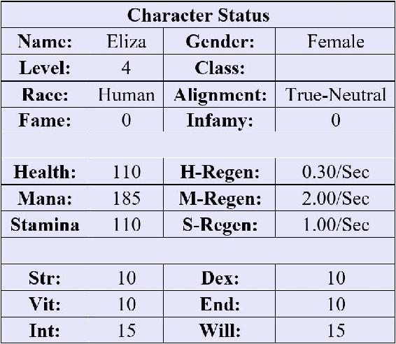

“This one here is called Rose Thistle,” Alma explained as she pointed to a plant that looked remarkably like rosemary. It was a bushy plant that rose to Eliza’s waist, and thick gray needles covered its limbs.
The pair was kneeling in Alma’s garden. Her house was located just outside of Falcon’s Hook along the edge of a nearby forest. “House” might not have been precisely the right word, however. Alma owned a small isolated compound of cottages ringed by towering oaks. She used one of the buildings as her home. The other two were for storing and drying various plants and brewing potions. Between these structures was nearly an acre that Alma had turned into a gardener’s paradise. A tall stone wall circled a garden that contained all manner of exotic plants and herbs.
“How do you harvest this one?” Eliza asked curiously, pointing at the Rose Thistle.
Alma used a pair of shears to cut off a branch. “You can just remove individual limbs and then strip the needles, but I suggest we wait until we get inside to remove the needles. They make a good catalyst for other potions – increasing their strength. You don’t want to lose any during the harvesting process.”
Eliza tried this on her own, collecting multiple limbs and carefully placing them in a nearby basket. After a few minutes, she was rewarded with a notification.
| x1 Level Up! |
| You have (10) undistributed stat points. |
x1 Skill Rank Up: Herbalism
Skill Level: Beginner Level 2
Effect: Allows the player to harvest more difficult or dangerous plants. 1% chance for double ingredients.
She wiped at her forehead with her sleeve as she looked at the notifications. It had been a surprise that she could earn experience gardening. In fact, she was already a lofty level 3. She expected that wasn’t much progress compared to other players, but she was still proud of how she was improving.
“That looks like enough,” Alma said, noticing that Eliza had filled her basket. “Next, we can take these herbs inside and prepare them.” The older woman rose with a soft groan and headed to her lab.
Eliza followed, and the pair soon stepped inside the small cottage, where an assortment of surprisingly modern-looking laboratory equipment lay across multiple tables. Alma had squeezed furniture into the tiny space and had hung racks along the walls, which held all manner of instruments and vials.
“The process for distilling most herbs is relatively simple,” Alma explained, indicating that Eliza should place the basket beside her. She pulled a limb from the basket and stripped the needles with a small knife, the pile landing in a bowl she had set on the counter.
“However, you do need to be careful you don’t include other remnants of the plant,” the older woman explained, plucking a stem from the bowl that she had accidentally sliced off. She held up the sliver for Eliza. “Some parts can be quite poisonous. For example, the stem of the Rose Thistle can cause minor paralysis. It’s not fatal, mind you, but our customers would definitely not be happy if they suddenly had trouble moving.”
Eliza’s eyes widened in alarm, as Alma continued, “In more benign cases, the extra material can dilute or weaken the mixture, resulting in less potent potions.”
“I’ll keep that in mind,” Eliza replied, observing her carefully. “What’s the next step?”
Alma nodded and grabbed another vial from the shelf, placing it over a burner. “We’ll distill the oil from the needles. It should turn a dark gray once it’s completed. Then we can add this oil to other potions to increase their potency.
“This is really the role of a catalyst. They increase the strength of other potions and sometimes allow you to combine two or more ingredients that otherwise wouldn’t mix well. The interactions between ingredients are almost a separate field of study altogether.”
Eliza watched the process in fascination as Alma sped through the various steps with practiced hands. The woman was a font of knowledge when it came to Herbalism and Alchemy. Somehow, she was able to recall every detail regarding the plants in her garden and the combinations of various ingredients.
As Alma set the solution over the burner, Eliza’s gaze wandered to the books on the shelves around the lab. The older woman had assigned her quite a bit of reading over the last day. In contrast to her real-life studies, however, she found this fascinating. The game’s programmers had developed an entirely new chemistry system centered around the in-game plants. She was a little in awe of how much work that must have taken.
“And here we go,” Alma said, lifting a vial of a dark gray substance. “Not too hard, huh?”
“I think I could probably handle this,” Eliza said confidently.
“Well then, by all means, give it a try,” the older woman replied with a chuckle. “I’ll go out and finish tending to the garden.”
Eliza spent the next hour stripping needles, preparing the distillation solution, and harvesting vials of the dark gray substance. She found herself swiftly getting into the rhythm and routine of the process and losing track of time. After she had made her way through the entire basket, another series of notifications appeared in her vision.
| x1 Level Up! |
| You have (15) undistributed stat points. |
x1 Skill Rank Up: Alchemy
Skill Level: Beginner Level 2
Effect: Increases the success chance of crafting potions and potion potency by 2%.
“Not too bad,” Alma said from behind Eliza as she surveyed the new potions.
“Thank you,” Eliza said with a small smile. She was actually enjoying herself for the first time in a long while. It was a shame she would need to log off soon to work on her classwork. Apparently, her “break” only applied to her extra coursework, not her regular classes.
Alma watched her closely. “You have done well over the last day or two. I think perhaps you might be ready to claim a class for yourself.”
“What do you mean?” Eliza asked in confusion. “Haven’t I already learned the Herbalism and Alchemy skills?”
“Of course. Of course. But those are just skills. You also need to select a class for yourself. If you pull up your Character Status screen, your class should show up as a blank right now.”
Eliza’s brow furrowed, and she fiddled with the menus on her in-game user interface. She had noticed the odd little bars indicating her health, mana, and stamina hovering at the corner of her vision, but she hadn’t spent much time digging through the menus. After an embarrassing moment, she eventually found the button that brought up her Character Status screen. She tapped it, and a large blue window appeared in the air before her.

“Good. Now see how your class is currently blank? You can select one by going to see the trainers in Falcon’s Hook.”
“Okay… but what type of class should I pick?” Eliza asked with concern. If her real-life experience and the Hippie’s garden had taught her anything, it was that she wasn’t great at making decisions.
“If you want your focus to be on Alchemy and Herbalism, then there are several classes that provide a good synergy. If you want to focus on making money, a Merchant class would be useful. A more combat-oriented class might also be helpful if you plan to try to find rare plants and ingredients – I can’t grow everything in my garden, and we don’t always use plants in our potions.”
Eliza pushed at her glasses as she considered these options. She was going to rule out the combat class immediately, and she was a bit skeptical that she would make a good merchant. “What class are you?” she finally asked.
“I chose to become a water mage,” Alma said, placing her hand on her chest. “Most of the spells are useful for growing herbs and plants, and I don’t have much desire to go out adventuring.”
The older woman paused and looked at Eliza closely. “The trouble with choosing a magic class is that you have to have the right affinity. You will also have to convince the mage guild in Falcon’s Hook to teach you Veridian – the language of mages. They tend to be a finicky bunch and put their apprentices through all sorts of hoops.”
Eliza grimaced at this news. She liked working with Alma and didn’t enjoy the idea of having to do quests for a bunch of mages to earn their approval.
“I suggest you take a walk into town and talk to a few of the class trainers. The fresh air would do you good anyway. You’ve been cooped up here for the last couple days.”
“Okay,” Eliza said reluctantly and headed for the door.
“One more thing,” Alma called from behind her, stepping forward slowly and leaning on her cane. “Some of the guilds in town get a stipend based on how many travelers they sign up, so they can be somewhat pushy. You don’t have to pick anything today. Don’t let anyone pressure you into something you don’t want to do.”
Eliza nodded numbly, thinking to herself that Alma may have just described the sum total of her life outside the game. She spent most of her time catering to her parents’ demands. Perhaps the older woman was right. If this was just a game, maybe she should focus on picking something she would enjoy. That was the whole point of playing after all. This was supposed to be her time to decompress and get lost in something other than her studies.
She exited the cottage and made her way toward Falcon’s Hook. Alma’s cottage was located on the outskirts of the forest and a few miles from town. As Eliza ventured toward Falcon’s Hook – following a rough-hewn dirt road – the tree cover began to thin. She was nearly halfway to the main highway into the city when she heard a person speaking loudly around the next bend.
“I’m telling you, she is supposed to come this way,” a young man’s voice echoed through the wood. “This is the only road between here and the town.”
“Ahh, there she is!” the Hippie exclaimed as she rounded the corner. He was sitting on a log beside the trail, with Fluffy lying amiably beside him.
“See, I told you she would take this path.” Looking up at Eliza, he gestured to Fluffy. “He is always such a pessimist.” This earned him a soft snort, and Eliza could have sworn the sheep rolled its eyes.
“What do you want?” Eliza demanded in an irritated voice. She was still upset at how the Hippie had tossed her into Falcon’s Hook with no warning or explanation.
“I heard you were looking for a class,” he said innocently. “And I figured I would offer my advice!”
“How could you know that?” she asked, puzzled.
“It’s a mystery,” he replied, steepling his fingers in what she assumed was some poor attempt to look calculating or mysterious. “Suffice it to say that I have my ways.”
Eliza shook her head. “I haven’t even spoken to the trainers. I don’t know what class I want to choose yet,” she explained, trying to edge around the crazy young man.
“No need! I have the perfect solution for you. Drum roll please, Fluffy,” he demanded. The sheep proceeded to thump its tail lazily against the ground.
“You should be… wait for it…”
“A water mage!” the Hippie announced enthusiastically.
Eliza just stared at him for a moment, adjusting her glasses. “That’s the same class as Alma, but she said I’ll probably have to convince the mage guild to train me.”
The Hippie seemed a bit deflated by this news. “Huh. Well, that’s a bit of a letdown. Oh, I know! We can teach you!”
“You can teach me?” Eliza echoed, eyeing him skeptically.
“We,” he clarified, gesturing at his pet sheep.
“Okay…” Eliza said slowly, trying to figure out how to extricate herself from this conversation so she could head into town.
“Great! Then it’s decided,” the young man clapped his hands together and then his fingers began to wiggle through an odd serious of gestures.
“What’re you doing?” Eliza asked as she watched him.
Her question was answered a moment later as droplets of water rose from the plants around her. The water swirled and danced in the air, forming multiple liquid globes that orbited the Hippie slowly. Once nearly a dozen of the spheres had collected around him, the young man glanced at Eliza, and a grin curled his lips.
He pointed in her direction, and the orbs raced toward her. Eliza ducked the first globe, but the next two splashed against her chest. Instead of merely soaking her clothes, the water formed a thick coating on her woolen shirt and began to expand unnaturally. Distracted by the strange liquid, Eliza lost focus, and another orb slammed into her shoulder while a third hit her in the back of the head.
“What is this?” Eliza asked, panic creeping into her voice as the water began to coat most of her upper body and crawl up her neck.
“Think of this as a crash course. We don’t have time to tackle the long version. Things to do, people to see. I’m sure you understand,” the Hippie said glibly, sitting back down on his log and watching her with a curious expression. Fluffy also spared a bored glance in her direction before going back to sleep.
“It’s easier if you just try and accept it,” the young man advised her as the water crept across her face, and tendrils began to cover her nose.
As the water fully enveloped her face, Eliza tried to hold her breath – her eyes wide as she clawed at the liquid. This is just a game, she kept reminding herself. She didn’t really need to breathe. And yet, the burning sensation in her lungs didn’t seem to know that.
“Don’t try to fight it,” the Hippie said impatiently. “You’re just making this take longer.”
Eliza had some choice words for him in response, but she didn’t have the breath to speak. Finally, she couldn’t help but try to breathe, and she reflexively opened her mouth. The water immediately flooded her lungs and nose. She gasped and choked as the world began to grow black and stars drifted at the edge of her vision. At the same time, a strange tickling sensation tingled the back of her head, building swiftly in intensity. The odd feeling soon flooded her mind and grew into a throbbing pain. She collapsed to her knees choking and her hands clutching at her head.
Then, mercifully, darkness claimed her.
Eliza woke some time later, her eyes blurry and unfocused. “What happened?” she croaked, trying to sit up.
“You passed out,” the Hippie said in a bored voice. “You literally held your breath until you passed out. I told you not to fight it.”
The memory came back quickly, and Eliza glared at him. “You tried to drown me!”
“That wasn’t ordinary water. It was just a tool to teach you Veridian. You would have been fine if you had just tried to breathe normally.”
Eliza stared at him for a moment as she adjusted her glasses. “You… you could have said that.”
“I believe I did,” he said with a confused look on his face, before turning to the sheep. “Didn’t I, Fluffy?” Then he shrugged, his multi-colored shirt flapping gently. “Oh well. In any event, you are now a full-fledged water mage! I also taught you the language of mages.”
He waited a few seconds with an expectant look on his face. “No rush. You can thank me when you’re ready… Any time now…”
Instead, Eliza muttered a few choice curse words under her breath, purposefully ignoring the irritating young man. As she managed to regain her feet, a barrage of notifications appeared before her.
| Class Change: Water Mage |
|
+20 Willpower +15 Intelligence Increased Water Magic Affinity (Currently 21%)
|
| System Notice: Affinity System Unlocked |
|
|
New Passive Skill: Mana Mastery
Your body contains natural mana, and you have a high affinity for magic. However, both of these are useless without the requisite tools to channel and cast your mana. You have learned the language of the original mages, Veridian. You may now manipulate your mana.
Skill Level: Beginner Level 1
Effect: -1% to the mana cost of spells.
“See? Wasn’t that easier than having to do a bunch of trivial tasks for those mages?” the Hippie asked. “Plus, we saved you a trip into town!”
Eliza didn’t bother to respond. Instead, she turned and started walking back to Alma’s house. If she had it her way, she might never leave the garden again – which was probably a good thing. She didn’t consider herself a violent person, but she wasn’t certain she would be able to resist the urge to strangle the Hippie if she saw him again.
As she walked away, she heard the young man call out behind her, “Hey, wait! You forgot Fluffy’s head rub!”
Eliza didn’t turn around.